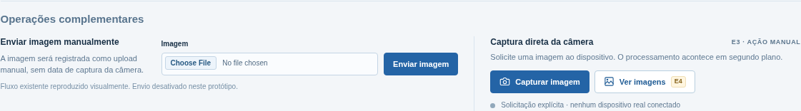

Disponibilidade contextual da captura
A direção C preserva a Variante B quando captura está disponível e informa indisponibilidade sem mostrar uma ação inerte.
Protótipo de proposta. Não envia upload ou captura, não chama o Django e não representa uma decisão sobre permissão ou capability. Sidebar, topbar, Quick Detail e Histórico não fazem parte deste recorte.
Operações complementares
Enviar imagem manualmente
A imagem será registrada como upload manual, sem data de captura da câmera.
Captura direta da câmera
Solicita uma captura usando o perfil autorizado desta câmera.
Variante B aprovada — referência visual original
A composição com as duas operações disponíveis é mantida. O screenshot abaixo inclui a ação “Ver imagens” como conceito visual de E4; a proposta E3 não a apresenta como ação produtiva.

O screenshot é uma referência de comparação. Não é uma implementação nem uma captura atual do Django.
Critérios de leitura e teclado da proposta
- O seletor de cenário e os modos B/C são controles nativos, nomeados e operáveis por teclado.
- Indisponibilidade é comunicada por texto; a cor não é o único sinal.
- Estados de job usam uma região viva educada; estados estáticos de configuração não criam foco ou botão inerte.
- O botão de captura aparece somente nos cenários em que a operação é apresentada como disponível.